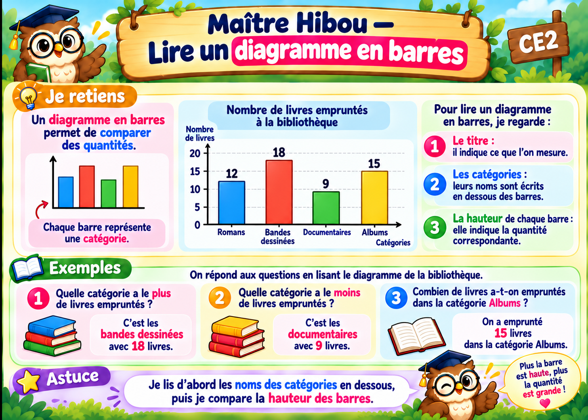

À toi de jouer !
Observe, réponds, puis vérifie. Tu passes à la suite quand tu as trouvé.
Nombre de livres empruntés à la bibliothèque
Bravo, les 10 exercices sont réussis !
Tu peux valider cette leçon.

Observe, réponds, puis vérifie. Tu passes à la suite quand tu as trouvé.
Nombre de livres empruntés à la bibliothèque
Tu peux valider cette leçon.